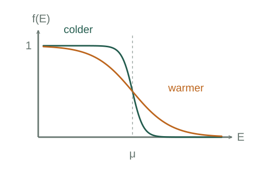

Why electrons follow the Fermi–Dirac occupation rule
The Pauli exclusion principle allows at most one electron in each specified single-particle quantum state. Combining that occupancy restriction with thermal weights gives the Fermi–Dirac function.
What the symbols mean
f(E): mean occupancy of one state of energy E; μ: chemical potential; T: absolute temperature; kB: Boltzmann constant.
When this applies
Electrons treated as independent or effective quasiparticles in thermal and particle-exchange equilibrium; each state includes its spin label.
Developing the argument

List the allowed occupations
For a particular fermion state the occupation number can be zero or one. This restriction is a quantum postulate, not an electrostatic repulsion effect.
Assign equilibrium statistical weights
In the grand-canonical description a state with energy contribution nE and particle count n has weight exp[−n(E − μ)/(kBT)]. Thus the empty-state weight is one.
A closer lookDerive the energy and particle-number weights ↗Derive Boltzmann weights from a thermal reservoirNormalize the two possibilities
The probability of being occupied is its weight divided by the sum of empty and occupied weights. Since occupancy is zero or one, this probability also equals mean occupancy.
Take useful limits
At zero temperature, states below μ are filled and those above are empty. Far above μ at nonzero temperature, occupancy is small and approaches a Boltzmann factor.
A worked example
At E = μ and nonzero T, the occupation is 1/2. At E − μ = kBT ln 3, it is 1/4.
Derivation behind this calculation ↗A point to keep straight
Occupation probability is not density of states. Counting electrons in an energy interval requires multiplying by the available-state density and integrating.
Check the assumptions and derivation ↗